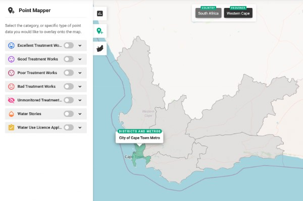
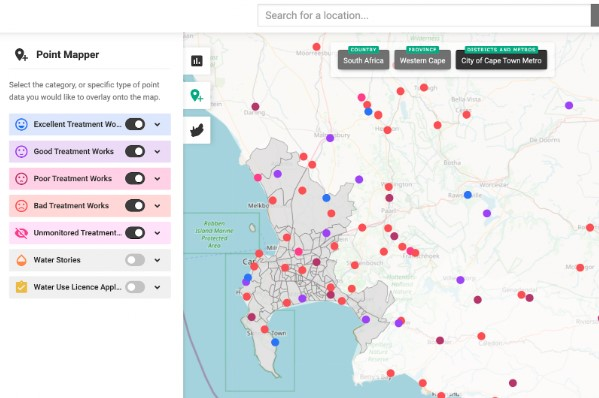
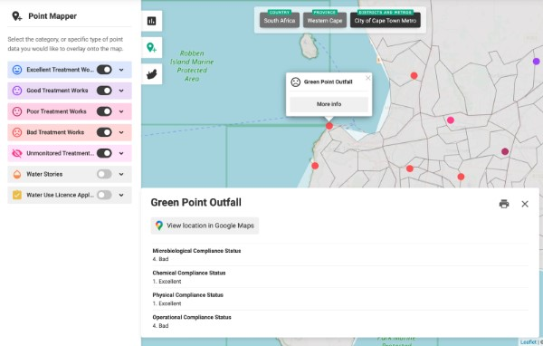

How to use WaterWazi
Search for a location of interest
Navigate the map with your cursor, and find a location of interest by clicking through geographies (province, district, metro, municipality, ward, etc.).
Explore South African treatment works
Toggle different point collections on and off from the panel on the left, and explore South African treatment works by their overall status (i.e., Excellent, Good, Poor, and Bad). Treatment works can also be filtered by the Province they are located in; their Microbiological, Chemical, Physical, and Operational Compliances; the Year they were last monitored; the Institution responsible for their upkeep; and the bodies of water they Discharge into.
Click on points for more info
Click on a point, and then on More Info to see more details about a particular treatment work. In addition to the filters already mentioned, this info includes the treatment work’s Percentage of compliance (for Microbiological, Chemical, Physical, and Operational), its Class and Capacity, as well as the source of data.
Explore Water Stories

Explore stories about water in South Africa in one of two ways:
(1) By plotting Water Story points from the panel on the left, and exploring their More Info; or
(2) visiting our Water Story Repository.